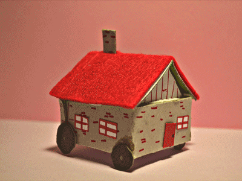

CASA
INTELIGENTE

Selecciona la opción que deseas realizar:
Menú para controlar la cochera:
🟢 Abrir cochera ahora
🔴 Cerrar cochera ahora
🟢🔴 Abrir y cerrar cochera ahora
🕘🟢🔴 Programar apertura y cierre de cochera
Menú para controlar la música:
🔊 Encender la música
🔉 Apagar la música
🕘🔊🔉 Programar encendido y apagado de música
Información de la última ejecución:
❔ Sin ejecutar
Acerca del proyecto
Acerca del proyecto
SISTEMAS EMBEBIDOS
IMPARTIDA POR:
MC. JONAM LEONEL SÁNCHEZ CUEVAS.
EQUIPO: A - Z
EIMY LU-RUHAMA CRUZ RODRÍGUEZ, 19051114.
BRANDON ALEXIS PRADO CASTRO, 19051178.
MARIO ORLANDO TORRES SALAZAR, 19051220.
Viernes 8 de diciembre de 2023
×
Programar alimentación
Hora:
Fecha: